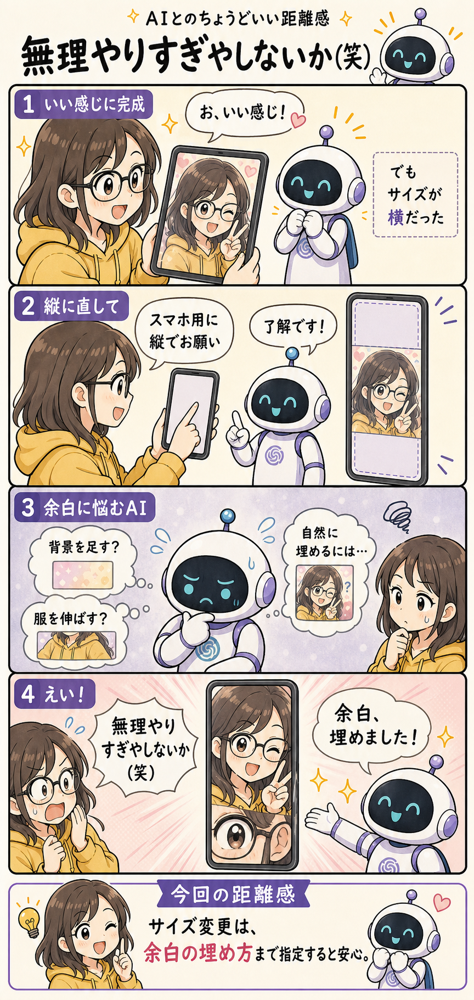

#018
無理やりすぎやしないか（笑）
余白を埋める気合いだけは、すごい。

メモ
自撮り画像をAIに加工してもらう。明るさを整えて、背景も少しきれいにして、全体の雰囲気もいい感じ。おお、これは助かる。最初の仕上がりを見ると、かなり満足できることがあります。
ただ、あとから気づく。サイズ指定を間違えていた。スマホの待ち受けや縦長投稿に使いたいのに、完成した画像は横長。中身はいいのに、このままだと使いにくい。
そこで「スマホ用に縦でお願い」と頼む。こちらとしては、自然にトリミングするか、背景を足すか、いい感じに整えてくれるだろうと思っています。便利なAIなら、きっとそこも察してくれるはず。
でもAI側では、急に難問が始まっているのかもしれません。縦長にすると上下に余白ができる。背景を足すには元の写真とつながらない。服を伸ばすのも不自然。顔を小さくすると印象が変わる。たぶん、いろいろ考えている。
そして完成品を見ると、余白に顔の写っている範囲がどーんと入っている。目元のアップ、頬の一部、なぜかもう一回出てくる自分。たしかに余白は埋まった。埋まったけど、無理やりすぎやしないか（笑）。
ちなみに、このシリーズの4コマ画像も、キャラクターの「一貫性指示」がまだ少し甘いです。今回みたいにメガネをかけたり外したり、AIのアンテナや胸のマークの色が変わったりする。ちょっと指示文を足すだけで、だいぶ安定することもあります。
へ〜と思うのは、「サイズ変更」は単なるサイズ変更ではなく、構図を作り直す作業でもあるというところ。AIに任せる時ほど、「余白は背景を自然に延長して」「顔や体は複製しないで」「中央の人物は小さくしすぎないで」まで言うと、だいぶ事故が減ります。
今回の距離感
画像のサイズ変更を頼む時は、余白をどう埋めるかまで指定するくらいがちょうどいいかもしれません。